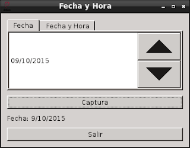

Manejo de Fecha y Hora con PyQt. Parte 5
Posted on jue 07 julio 2011 in Tutorial de Python y PyQt • 3 min read
En este artículo se creará una ventana con 2 pestañas, 2 botones, y una etiqueta; el primer botón capturará le fecha o fecha y hora según la pestaña seleccionada y lo presentará en la etiqueta, el otro botón es para salir de la aplicación; en la primera pestaña se muestra el widget de fecha y en la segunda se muestra el widget de fecha y hora.
Se utilizarán los siguientes widgets:
- QtGui.QTabWidget: Permite crear pestañas.
- QtGui.QDateEdit: Permite crear el widget incremental o decremental de la fecha.
- QtGui.QDateTimeEdit: Permite crear el widget incremental o decremental de la fecha y hora.
Como se tiene un solo botón para capturar la fecha para ambas pestañas es necesario capturar el identificador de cada pestaña para así dependiendo del caso generar el resultado de la fecha u fecha y hora.
El código del programa se muestra a continuación:
#!/usr/bin/env python
# -*- coding: utf-8 -*-
#Se importa el modulo sys
import sys
#De PyQt4 importar QtGui y QtCore
from PyQt4 import QtGui
from PyQt4 import QtCore
class App(QtGui.QWidget):
def __init__(self,parent=None):
QtGui.QWidget.__init__(self, parent)
#Se define el tamano de la ventana
self.setGeometry(500, 500, 350, 250)
#Se le coloca un titulo a la ventana y se asocia un icono.
self.setWindowTitle('Fecha y Hora')
self.setWindowIcon(QtGui.QIcon('./openlogo-50.png'))
#Se crea la instancia del widget de la fecha
#Se define el formato de la fecha
#Se le asigna al widget la fecha actual.
self.fecha = QtGui.QDateEdit(self)
self.fecha.setDisplayFormat("dd/MM/yyyy")
self.fecha.setDate(QtCore.QDate.currentDate())
#Se crea la instancia del widget de la fecha y hora.
#Se le da formato a la fecha y hora.
#Se le asigna la fecha y hora actual al widget.
self.fechayhora = QtGui.QDateTimeEdit(self)
self.fechayhora.setDisplayFormat("dd/MM/yyyy HH:mm:ss")
self.fechayhora.setDateTime(QtCore.QDateTime.currentDateTime())
#Se crea el boton que captura la fecha u hora
captura1 = QtGui.QPushButton("Captura",self)
#Se crea el boton para salir de la aplicacion
quit = QtGui.QPushButton('Salir', self)
#Se crea la etiqueta donde se muestra la fecha u hora
self.etiqueta = QtGui.QLabel("Fecha:")
#Se crea la instancia del widget pestagna
#Se define que no se puede cerrar las pestagnas
self.tab = QtGui.QTabWidget(self)
self.tab.setTabsClosable(False)
#Se agrega a la 1era pestagna el widget de la fecha
self.tab.addTab(self.fecha,"Fecha")
#Se agrega a la 2da pestagna el widget de la fecha y hora
self.tab.addTab(self.fechayhora,"Fecha y Hora")
#Empaquetamiento de los widgets en una cuadricula.
grid = QtGui.QGridLayout()
grid.setSpacing(10)
#Se agrega el widget pestagna, boton de captura,
#etiqueta y boton de salida.
grid.addWidget(self.tab, 1, 0)
grid.addWidget(captura1,2,0)
grid.addWidget(self.etiqueta, 3, 0)
grid.addWidget(quit,4,0)
self.setLayout(grid)
#Se conecta la segnal del boton captura con el evento clicked al
#metodo mostrarIndice.
self.connect(captura1,QtCore.SIGNAL('clicked()'),self.mostrarFechayHora)
#Se asocia ala segnal del boton quit al evento clicked y se ejecuta la
#salida del programa.
self.connect(quit, QtCore.SIGNAL('clicked()'),QtGui.qApp, QtCore.SLOT('quit()'))
def mostrarFechayHora(self):
#Captura el indice de la pestagna para mostrar
#la informacion de la fecha u fecha y hora.
if self.tab.currentIndex() == 0:
#Se presenta en la etiqueta la fecha con el
#formato dia/mes/agno.
#se toma la informacion de la funcion date del widget
#este devuelve una fecha y se captura el dia, mes y agno.
self.etiqueta.setText("Fecha: %s/%s/%s"
%(self.fecha.date().day(),
self.fecha.date().month(),
self.fecha.date().year()) )
else:
#Se presenta en la etiqueta la informacion de la fecha y hora.
#con el formato dia/mes/agno hora:minutos:segundos.
#Se utiliza el metodo textFromDateTime que devuelve un string
#pasandole una fecha y hora
self.etiqueta.setText("Fecha y Hora: %s"
%self.fechayhora.textFromDateTime(self.fechayhora.dateTime()))
#Se ejecuta el programa principal
if __name__ == "__main__":
#Se instancia la clase QApplication
app = QtGui.QApplication(sys.argv)
#Se instancia el objeto QuitButton
qb = App()
#Se muestra la aplicacion
qb.show()
#Se sale de la aplicacion
sys.exit(app.exec_())
La figura muestra el programa al iniciarse:

La siguiente figura muestra que se modifico la fecha con los botones de incrementar o decrementar y luego se presionó al botón captura:

La siguiente figura muestra cuando se selecciona la segunda pestaña:
La última figura muestra que se modifico la fecha y la hora con los botones incrementales o decrementales y luego se presionó al botón captura:

===
¡Haz tu donativo! Si te gustó el artículo puedes realizar un donativo con Bitcoin (BTC) usando la billetera digital de tu preferencia a la siguiente dirección: 17MtNybhdkA9GV3UNS6BTwPcuhjXoPrSzV
O Escaneando el código QR desde billetera: